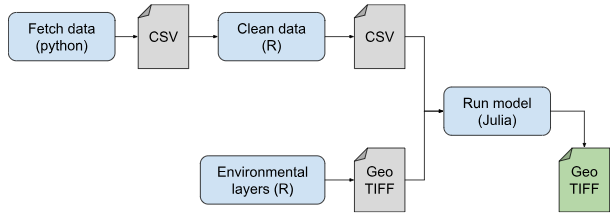

À propos
BON in a Box est une initiative du Group on Earth Observations Biodiversity Observation Network (GEO BON) qui réunit expertise scientifique, outils et analyses de la biodiversité pour soutenir le suivi de la biodiversité et la production de rapports.
La plateforme offre des ressources pour le développement de réseaux d’observation de la biodiversité (BON): un catalogue de projets et d’outils de suivi de la biodiversité, ainsi que le Moteur d’Évaluation de la Biodiversité (BEE), qui permet aux utilisateurs de calculer des variables essentielles de biodiversité (VEB, ou EBV en anglais) et des indicateurs de biodiversité.
Pour plus d’informations sur BON in a Box en général, consultez le site Web de BON in a Box. Pour plus de détails sur les motivations à l’origine du moteur de pipelines, consultez notre publication dans BioScience (en anglais).
Qu’est-ce que le Moteur d’Évaluation de la Biodiversité (BEE) de BON in a Box?
Le Moteur d’Évaluation de la Biodiversité (BEE) est une plateforme ouverte qui réunit des données sur la biodiversité et des méthodes scientifiques pour calculer des VEB et des indicateurs destinés au suivi de la biodiversité, à la planification de la conservation et à la production de rapports.
BEE rend les analyses scientifiques plus accessibles en permettant aux utilisateurs d’exécuter des flux de travail analytiques standardisés et reproductibles sans devoir développer eux-mêmes le code sous-jacent. Ces flux de travail automatisés sont appelés pipelines.
Développé grâce aux contributions de la communauté scientifique de GEO BON, BEE intègre l’expertise et les méthodes scientifiques de chercheurs du monde entier et permet aux utilisateurs de :
Calculer des indicateurs de biodiversité et des VEB à l’aide de méthodes scientifiques rigoureuses et transparentes.
Intégrer diverses sources de données, notamment des observations locales de la biodiversité, des jeux de données mondiaux et des données d’observation satellitaire.
Exécuter des analyses reproductibles grâce à des flux de travail standardisés pouvant être appliqués dans différentes régions géographiques et différents contextes.
Accéder à des méthodes scientifiques et y contribuer par l’intermédiaire d’une plateforme libre et communautaire.
BEE soutient le suivi de la biodiversité aux échelles locale, nationale et mondiale, notamment par le calcul d’indicateurs pertinents pour le Cadre mondial de la biodiversité de Kunming-Montréal (GBF).
Pourquoi avons-nous besoin d’une telle plateforme?
Partout dans le monde, des scientifiques développent des flux de calcul de variables essentielles de biodiversité (VEB) et d’indicateurs afin de rendre compte des changements de la biodiversité. Cependant, ces initiatives se déroulent en parallèle, entraînant un dédoublement des efforts. En fournissant une plateforme de partage de flux de travail et d’outils, BON in a Box permet aux réseaux de réutiliser et d’améliorer les pipelines d’autres réseaux.
De surcroît, les pays et les organisations responsables du suivi de la biodiversité et de la production de rapports peuvent manquer des ressources techniques ou de l’expertise nécessaires pour mettre en œuvre ces méthodes.
BEE vise à combler le fossé entre la recherche scientifique et son application pratique au suivi de la biodiversité et à la prise de décision.
En réunissant des méthodes analytiques au sein d’une plateforme libre et partagée, BEE réduit le dédoublement des efforts, favorise la collaboration scientifique et rend les analyses de biodiversité accessibles à un plus large éventail d’utilisateurs.
Des données à la prise de décision
BEE transforme les données sur la biodiversité grâce à sa sélection de méthodes scientifiques afin de produire des résultats pouvant éclairer la planification de la conservation, le suivi de la biodiversité et la production de rapports.
Les utilisateurs peuvent combiner leurs propres données avec des jeux de données accessibles au public, notamment des données sur les occurrences d’espèces, les aires protégées, les variables environnementales et les produits d’imagerie satellitaire.
Ces données sont traitées par des chaînes de traitement afin de produire notamment des cartes de répartition des espèces, des mesures de connectivité, des VEB et des indicateurs de biodiversité.
En fournissant des méthodes transparentes et reproductibles, BEE permet de réaliser des évaluations cohérentes de la biodiversité entre les régions et au fil du temps, tout en permettant aux utilisateurs d’intégrer des données et des informations pertinentes pour leur contexte local.
Qu’est-ce qu’un pipeline?
Un pipeline - ou chaîne de traitement - est une séquence automatisée d’étapes analytiques qui transforme des données d’entrée en résultats utiles pour le suivi de la biodiversité et la prise de décision.
Chaque pipeline réunit des composants plus petits et réutilisables appelés scripts, qui accomplissent des tâches précises comme le téléchargement de données, le nettoyage d’observations, l’exécution de modèles statistiques ou la production de résultats spatiaux.
Ces scripts peuvent être combinés et réutilisés dans différents pipelines, ce qui facilite le développement de nouvelles analyses et l’adaptation des méthodes existantes.
Si un pipeline s’appuie sur les résultats d’un autre pipeline, ce pipeline « interne » peut être inclus comme étape du pipeline « externe »; on parle alors de pipeline imbriqué. Un pipeline SDM pourrait servir à générer des cartes de répartition au sein d’un pipeline Species Habitat Index ou être intégré à un pipeline Species Richness. Nous pouvons ainsi définir une étape comme « un script ou un pipeline imbriqué exécutant une opération dans le contexte d’un pipeline ».
BEE prend en charge des scripts développés dans plusieurs langages de programmation, notamment R, Python et Julia, ce qui permet d’intégrer les méthodes de différentes communautés scientifiques dans un cadre analytique commun.

Pourquoi contribuer?
Le succès de BON in a Box repose sur la collaboration au sein de la communauté mondiale de recherche et de suivi de la biodiversité.
Les chercheurs et les développeurs peuvent contribuer des pipelines analytiques, des méthodes scientifiques, des améliorations aux flux de travail existants, et réviser le travail de leurs pairs, contribuant ainsi à rendre leurs recherches accessibles et applicables au-delà de leur contexte initial.
Contribuer à BEE peut aider à :
Accroître l’impact de la recherche en mettant des méthodes scientifiques à disposition pour le suivi de la biodiversité et la prise de décisions en matière de conservation.
Promouvoir la reproductibilité et la transparence grâce à des flux de travail ouverts et documentés.
Soutenir la collaboration en permettant aux chercheurs de s’appuyer sur les méthodes existantes et de les améliorer.
Renforcer les capacités de suivi de la biodiversité en rendant les outils analytiques plus accessibles aux organisations et aux pays.
Les pipelines proposés respectent des normes de qualité documentées; l’évaluation par les pairs contribue à la rigueur scientifique, à la facilité d’utilisation et à la généralisabilité des flux de travail publiés.
Pour en savoir plus, consultez nos directives de contribution et notre processus d’évaluation par les pairs.
Comment citer
Lorsqu’on partage des résultats d’analyse faits avec BON in a Box, une bonne citation comporte trois parties distinctes: la plateforme, la chaine de traitement et les données.
Veuillez citer la plateforme BON in a Box comme suit :
Jory Griffith, Jean-Michel Lord, Michael D Catchen, Maria Isabel Arce-Plata, F Guillaume Blanchet, Mathusan Chandramohan, M Camila Diaz-Corzo, Dominique Gravel, César Gutiérrez, Isabelle S Helfenstein, Sean Hoban, Jamie M Kass, Linda Laikre, Guillaume Larocque, Deborah M Leigh, Brian Leung, Alicia Mastretta-Yanes, Katie L Millette, Maria Alejandra Molina Berbeo, Dat Nguyen, Kari E Norman, María Helena Olaya-Rodríguez, Simon Pahls, Kaitlyn Pereira, Pedro R Peres-Neto, Timothée Poisot, Laura J Pollock, Juan Carlos Rey-Velasco, Victor J Rincon-Parra, Claudia Roeoesli, François Rousseu, Lina María Sánchez-Clavijo, Meredith C Schuman, Oliver Selmoni, Jessica M da Silva, Erika Suarez-Valencia, Thilina D Surasinghe, Eren Turak, Luis Fernando Urbina, Sarah Valentin, Noah Wightman, Juan Zuloaga, Maria Cecilia Londoño, Andrew Gonzalez, BON in a Box: An Open and Collaborative Platform for Biodiversity Monitoring, Indicator Calculation, and Reporting, BioScience, 2026, biaf189, https://doi.org/10.1093/biosci/biaf189
La citation de la chaîne de traitement devrait utiliser l’archive Zenodo pour les pipelines ayant eu leur revue par les pairs, et la méthodologie scientifique associée pour les pipelines en cours de développement.
Pour citer les données, vérifiez s’il y a des indications dans la description du pipeline. Assurez-vous d’inclure toutes les données fournies comme intrants. Dans le cas de GBIF, un DOI est fourni en sortie, regroupant les citations de tous les jeux de données qui ont été aggrégés.